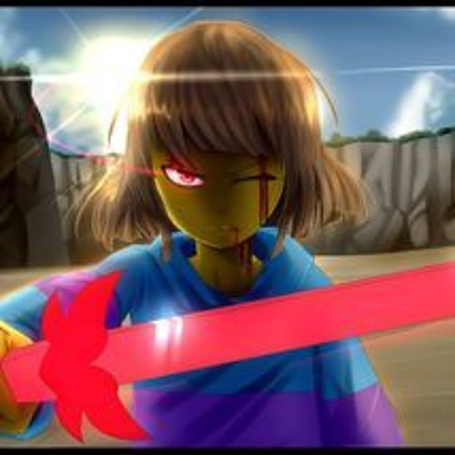
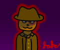
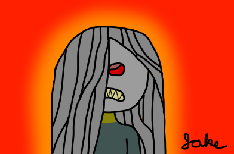
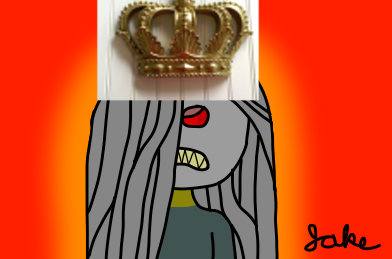

604
Mafia Hitman
Mafia Offensive
Eye on You (Passive) - The factional kill is strongman and ninja on players who have claimed. When you die you may kill a player of your choice.
Defeat all threats to the Mafia.

604
Mafia Hitman
Mafia Offensive
Eye on You (Passive) - The factional kill is strongman and ninja on players who have claimed. When you die you may kill a player of your choice.
Defeat all threats to the Mafia.
605
The Broken Telepathy
Town Social
tr[ee] st[u]mp(passive) - After dying, you will not be added to deadchat and instead will be able to speak in main chat. However, you are only able to use vowels while speaking. Any use of punctuation or constonants will result in you losing this passive.
Broken telepathy(day) - You may send a message through the hosts to the main chat. However, the host can choose to remove any letters from the message at their will. For example, “Marshal Is scum” could be interpreted as “I cum”(inf uses, can only be used 5 times a day)
town wincon
Converts into 606
606
The Busted Telepathy
Mafia Social
tr[ee] st[u]mp(passive) - After dying, you will not be added to deadchat and instead will be able to continue to speak in scum chat. However, you are only able to use vowels while speaking. Any use of punctuation or constonants will result in you losing this passive.
Broken telepathy(day) - You may send a message through the hosts to the main chat. However, the host can choose to remove any letters from the message at their will. For example, “Marshal Is scum” could be interpreted as “I cum”.(inf uses, can only be used 5 times a day)
scum wincon
607
Geyde
Mafia Special
All class card effects who can target geyde can target u
Defeat all threats to the Mafia.
608
Wait this ain’t Salem
Town Social
This ain’t Salem! (Passive) - You are revealed Day 1. If you die, all town members get 1 secret vote for a second day lynch, and they keep this even after death. The votes for the 2nd lynch will not be revealed.
Beyond the Grave (Passive) - You can use abilities while dead.
Double Votes! (Day) - Double all votes on a player in the 2nd lynch. Can only use this while dead. 3 uses
Defeat all threats to your faction
609
The Ritualist
Blue Dragon Killer
Sacrificial Offering (Passive) - You can only kill Blue Dragon members. If you kill a Non-Blue Dragon player, you will commit suicide. For every Blue Dragon you kill, gain a use of limited abilities.
Kidnap (Day) - Occupy target player this night, bypassing immunity. You will kill them at the end of the night. Inf uses
Judge (Day) - End the day early. If the wagon with the most votes is non-Blue Dragon, they will be lynched. Otherwise, they will be kept alive. 0 use
Gruesome Ritual (Night) - Kill a player. Inf uses
Spirit Blast (Night) - Kill 2 players, ignoring Sacrificial Offering. 0 uses
Defeat all threats to the Blue Dragon
Converts into The Ritualist/The Ritualist
610
The Ritualist
Unseen Killer
Sacrificial Offering (Passive) - You can only kill Unseen members. If you kill a Non-Unseen player, you will commit suicide. For every Unseen you kill, gain a use of limited abilities. Keep all uses of your previous abilties.
Un-Promotion (Passive) - You will not promote into any other classes, except for the.
Kidnap (Day) - Occupy target player this night, bypassing immunity. You will kill them at the end of the night. Inf uses
Judge (Day) - End the day early. If the wagon with the most votes is non-Blue Dragon, they will be lynched. Otherwise, they will be kept alive. 0 use
Gruesome Ritual (Night) - Kill a player. Inf uses
Spirit Blast (Night) - Kill 2 players, ignoring Sacrificial Offering. 0 uses
Defeat all threats to the Unseen
611
Watermelon Ice
Neutral Social
Town Power? (Passive) - If you are visited by town members, you will impulsively kill them. If you are voted by the town, you will kill one at night, at random.
No-Vote Scum (Day) - Make all scum votes count as 0 for today. They will still appear to be voting. If this causes the lynch to transfer elsewhere, everyone will be alerted. 2 uses
Ice Shower (Day) - Send this message to everyone: “An Ice Shower is happening!” Anyone who leaves their room will be announced tomorrow. 2 uses
Watermelon Ice (Night) - Prevent target player from talking tomorrow. They can still vote in their classcard. If they are town, prevent their vote as well. Inf uses
See the Scum Teams lose the game.
612
Frisk


Neutral Special
Determination (Passive) - Your abilities are empowered when targeting an evildoer. In addition, an ITA session is opened that only you can successfully shoot any target. You will be sided with a random alignment or neutral.
But it Refused (Passive) - You cannot be Killed by any means. If you are attacks and would die, the message But it Refused will be given to both yourself and the attacker. You are not protected from lynching.
Stick (Day ability) - Equip your stick. Your next attack will always succeed in killing your target - Infinite Uses.
Bandage (Day ability) - Reapply the bandage. Your target will be healed - Infinite Uses
Made of LOVE (Night ability) - Attack a player - Infinite Uses
Date (Night ability) - Visit a player… for no reason - Infinite Uses
Prevent the [alignment] from losing the game, and protect your own SOUL at all costs.
613
The MafiaScum Jake

Scum Social
Vanilla 100% (Passive) - You appear to have no abilities nor passives.
Deathtunnel’d (Passive) - If anyone accuses you without accusing anyone else in a day, they will commit suicide.
Forced LHF (Day) - Send a player the following message: “You must now accuse X for the rest of the day. Failure to do so, or revealing you received this message ever will cause you to commit suicide. You cannot state that you got this in your logs.” All of these statements will be enforced. They will not be affected by Deathtunnel’d. - 3 uses
Nightkill (Night) - If none of your other teammates are killing, you may kill a player tonight. Inf use
Perform your faction’s wincon
614
The Masonry Intruder
Neutral Social
Mason (Passive) - You are included in all private chats, except the scumteam’s chat.
Survive to have at least one other player in one of your mason chats live
615
The Red Dragon King

Red Dragon Special
Rise of a Red Day (Passive) - If you are naturally rolled, all Blue Dragon will be re-factioned to their Red Dragon counterpart
Standard Blue Dragon King abilities and passives
See that the scum factions and neutral killers are dead
616
The Blood Warden

Red Dragon Killer
Unstoppable (Passive) - You cannot be occupied at night, even by means that bypass occupy immunity. You are also immune to target changing.
Royal Blood (Passive) - Votes to become king count as two for you.
Imprison (Day) - Choose a player to jail at night occupying the target (Bypasses occupy immunity) and preventing visits to them. You both will be able to send each other a single 1000 character message through the host. - Infinite uses
Execute (Night) - Kill the player you have jailed (Bypasses night immunity and healing). If the executed is a member of the Red Dragon, you will not be able to execute for the rest of the game. - 3 uses
Mercy (Night) - Heal the player you have jailed. - 2 uses
Your objective is to defeat the scum factions, and any neutrals that seek to do you harm.
Red Dragon counterpart of the Prince
617
The Flesh Linker
Red Dragon Social
Horrid Fervor (Passive) - Your presence ensures that any Demonic rivals do not nest in Adiart.The Demon will not spawn.
Tyrannical Blood (Day) - Check the alignment of the King. If they are Red Dragon, they will commit suicide. - 1 Use
Link Flesh (Day) - Select two players that will share a chat for the rest of the game. Can select yourself. - 3 Uses.
Your objective is to defeat the scum factions, and any neutrals that seek to do you harm.
Converts into The Illusionist or The Apostle
Red Dragon counterpart of the Mystic
618
The Demon
Red Dragon Social
Demonic Fervor (Passive) - Your presence ensures that any horrific rivals do not nest in Adiart. The Flesh Linker will not spawn.
Hell-Linked (Passive) - You can talk to the dead at night.
Last Rites (Night) - Use target dead Red Dragon’s non-healing infinite use ability on an alive player. You may also use limited use killing abilities. You will only be seen visiting the alive one. You may not use the same corpse more than once - Infinite Uses
Blood Ritual (Night) - The target dead player will be brought back to life until you die. All of their abilities will be 1 use. Upon either being converted, the other will also be converted. You are immune to occupation and redirection while using this ability. - 1 use
Your objective is to defeat the scum factions, and any neutrals that seek to do you harm.
Converts into The Soulcatcher or The Apostle
Red Dragon counterpart of the Priest
619
The Scorned

Neutral Social
Utter Contempt (Passive) - Immune to occupation, target changing and visit prevention. Additionally, you are immune to death at night once. Targeting a player with a night ability will mark them for the following day. After achieving your win condition, your abilities will be disabled and you will suicide this night. This passive is retained upon class change.
Bait and Switch (Day) - Target player is occupied for this day. - 1 Use
Incriminate (Night) - Frame target player. - Infinite Uses
Disguise (Night) - Target player will appear as the chosen class if they are lynched tomorrow. - 2 Uses
Survive to see 2 marked players lynched.
Turns into 620 if kinged.
620
The Begrudged King

Neutral Special
Pass the Torch (Passive) - If you die, a vote to determine the next king will be held at start of the next day.
Head of State (Passive) - Immune to occupation and redirection. Your abilities will not be seen by investigative abilities. You can use both day abilities in the same day.
Grand Trial (Day) - Instantly put a player on trial for treason lasting up to 24 hours possibly extending day. They may provide a defense within 12 hours, and then the players alive may either vote to execute or pardon. If a majority of players vote to execute, the day will end and the player on trial will be lynched. Otherwise, the day will continue as normal. - 1 use
Allies (Day) - Choose up to three players. During this night, you will have a private chat with them. - Infinite Uses
Guard! (Night) - Choose a player. They will be immune to death tonight. - 3 uses
Scapegoat (Night) - Send guards to frame two targets. - Infinite uses
Survive to see 2 marked players lynched.
Lone Wolf
Neutral Special
Lone Wolf (Passive) - You work alone. You cannot be added to a neighbourhood chat or private chat of any means. You gain a use of In Self Defence if you do nothing at night but weren’t occupied.
Target on my Back (Passive) - After people trying to kill you so many times, you’ve almost got a sense for it. At the end of each night, you are aware of how many players had visited you. Additionally, if you are targeted by the same person twice, further visits will always fail.
Wolf Bite (Day ability) - Attack a player, bleeding them. They will die in two nights unless treated, but this will occupy them during that night -** 2 uses
Watch Your Back (Night) - Check to see if anyone is sneaking up on you. If you’re attacked, you will fend off your attacker - 4 uses
In Self-Defence (Night) - Target a player. If you are visited by them, you will kill them - 1 Use
Watch your back and make it to the end.
622
The BloodLetter
Red Dragon Support
No Blood (Passive) - Immune to all bleeding affects.
Blood Let (Day) - Bleed target player, then make them permanently bleed immune. 1 use
Horrific Surgery (Night) - Heal target player. If they did not require healing, instead bleed them. Inf uses
Self-Mutilation (Night) - Heal yourself. If you are not attacked, the next time you are attacked will bypass protection. 3 uses
Your objective is to defeat the scum factions, and any neutrals that seek to do you harm.
Converts into The Herbalist or The Ritualist.
Red Dragon counterpart of the Physician
623
The Librarian
Neutral Killer
Silence! (Passive) - Anyone who says more than 10 posts a day can’t be protected. Anyone who says more than 50 posts will be modkilled at the end of the night. This includes yourself.
Authority (Passive) - Death, Occupation, and redirection immune.
Silent (Day) - Target player cannot talk for one cycle (they will be notified), or else you may choose from the following to affect them:
Kill, Vanillaize, Prevent Protection, or Nullify their votes. - Inf use
Book (Day) - Target player can only use words that they’ve already said for the rest of the game. They will be notified. 2 uses
Paper Cut (Night) - Attack target player. Inf use
Catalog (Night) - Add a player to your catalog that made more than 10 posts last day. If you select yourself, all players in the catalog will instead commit suicide.
Defeat all major factions, along with any neutrals that seek to do you harm
624
What a Grand idea! It’s mine now
Any Special
Morph (Passive) - Every day, you may choose to have a class rolled. You will become that class, as long as it is aligned with your faction. (Or if it’s able to be converted/unconverted into your faction)
Forced Morph (Passive) - Before N0, your are forced a class roll. You become that class with this passive along with Morph.
Complete your role’s goal
Why this shouldn’t be deleted:
It technically doesn’t have a faction or type, by in reality it does have a faction and type, as determined by random chance.
It’s able to be a JOAT class, while having the added benefit of being a high priority target for killversion. Optimally, however, it can be a Neutral Killer, using multiple killing abilties to… well yeah.
625
Overly Aggressive Slankvig
Blue Dragon Killer
Intimidating (Passive): You cannot be given a post restriction by any means.
Slankvig (Night): Kill target player provided they have made fewer posts in the thread than you (Infinite uses)
Slankvig Harder (Night): Kill target player provided that their post count is less than or equal to 10 percent of yours, bypassing all forms of immunity and protection (1 use)
Defeat all scum factions and any neutrals who seek to do you harm
626
The Liberator
Unseen Special
Recruit (Night): Convert target player to the Unseen, provided they are convertable. You will commit suicide the night you use this ability.
Defeat all factions you cannot win with and any neutrals who seek to do you harm.
627
The Genie
Unseen Special
Grant Wish (Night): Convert target player to the Unseen, provided that they have asked for scum to convert them in the main thread, or expressed the sentiment that it is likely they will be converted. (Infinite uses, 2 night cooldown)
Defeat all factions you cannot win with and any neutrals who seek to do you harm.
628
The Censor
Unseen Special
Censorship (Passive): At the start of the game, choose a word. The word cannot be any of the three thousand most commonly used words in the English language, nor a commonly used word in forum mafia (the latter is interpreted at the host’s discretion). While you live, the first player to say that word in the game thread will be converted to the Unseen.
Defeat all factions you cannot win with and any neutrals who seek to do you harm.
629
The Reality Warper
Unseen Special
Unconfirm (Night): If someone is mechanically confirmed to be a single Blue Dragon or Town class, or is agreed by at least half of Blue Dragon, town, etc. faction members to be confirmed to be a Blue Dragon or allied faction member, convert them to the Unseen (Infinite uses, no cooldown)
Defeat all factions you cannot win with and any neutrals who seek to do you harm.
630
The Loner
Unseen Special
Befriend (Night): If you are the sole living member of the Unseen, convert target player to the Unseen. (Infinite uses, 1-night cooldown)
Defeat all factions you cannot win with and any neutrals who seek to do you harm.
631
Killing firekitten be like
Named VT
632
Not a King, I swear
Neutral Special
Not a king, I swear (Passive) - You are immune to visits that cannot target the king
Goodish Trial (Day) - Put someone up on trial immediately. 3 uses
Hired @Mercenary (Night) - Grant yourself Death Immunity tonight. 3 uses
Survive until the end of the game.
633
The Guardsman
Blue Dragon Killer
Stand Watch (Night): Target a player and a class type. You will attack all members of that class type who visit that target. Cannot target the same player nor the same class type two nights in a row.
Challenge (Night): Target a player. If they attack another player, you will occupy them removing abilities and counterattack them. (1 use)
Defeat all scumfactions and any neutrals who seek to do you harm.